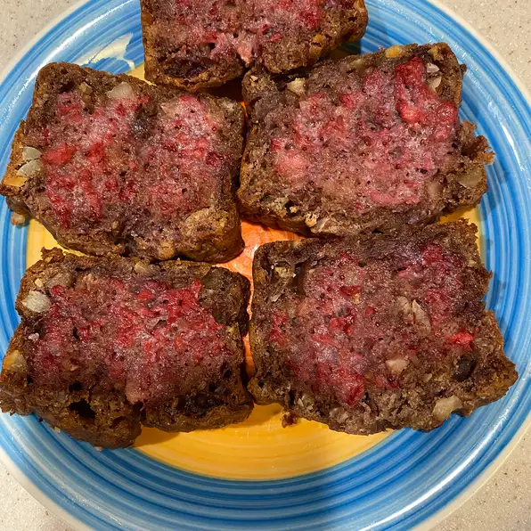

Strawberry Bread

Description
This is wonderful hot or cold, for breakfast or as a dessert.
A definite family favorite!
Ingredients
- 2 cups fresh strawberries
- 3⅛ cups all‐purpose flour
- 2 cups white sugar
- 1 tablespoon ground cinnamon
- 1 teaspoon salt
- 1 teaspoon baking soda
- 1¼ cups vegetable oil
- 4 eggs, beaten
- 1¼ cups chopped pecans
Steps
-
Step 1
Preheat oven to 350 degrees F (175 degrees C).
Butter and flour two 9 x 5‐inch loaf pans.
-
Step 2
Slice strawberries and place in medium‐sized bowl.
Sprinkle lightly with sugar, and set aside while preparing butter.
-
Step 3
Combine flour, sugar, cinnamon, salt and baking soda in large bowl;
mix well. Blend oil and eggs into strawberries. Add strawberry mixture to flour mixture,
blending until dry ingredients are just moistened. Stir in pecans. Divide batter into pans.
-
Step 4
Bake in preheated oven until a tester inserted in the center comes out clean, 45 to 50
minutes (test each loaf separately). Let cool in pans on wire rack for 10 minutes.
Turn loaves out of pans, and allow to cool before slicing.